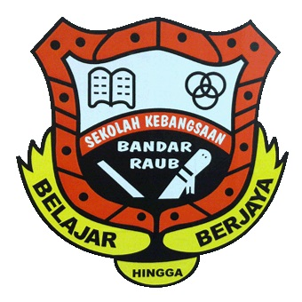

KINDERGARTEN
PASTI AL-HANNAN (2006-2007)
PRIMARY EDUCATION
SEKOLAH KEBANGSAAN BANDAR RAUB (2008-2011)
SEKOLAH KEBANGSAAN (P) METHODIST (2011-2014)
I studied at these two schools starting in 2008 until 2014. I used to go to school by car. The first school is located 8 km from my house. The second school is located 3 km from my house.
| Subject | Grade |
|---|---|
| BAHASA MELAYU (PEMAHAMAN) | A |
| BAHASA MELAYU PENULISAN | A |
| BAHASA INGGERIS | A |
| MATEMATIK | A |
| SAINS | B |
SECONDARY EDUCATION
SEKOLAH MENENGAH KEBANGSAAN SERI RAUB (2015-2019)
I continued studying at this secondary school in 2015 until 2019. This school emphasizes subjects in the Arabic and Science Stream languages. The school does have a hostel, but student have the right to decide wether to stay at home or in hostel. I love my secondary school because i created many memories with them.
PT3
| SUBJECT | GRADE |
|---|---|
| BAHASA MELAYU | A |
| BAHASA MELAYU (LISAN) | A |
| BAHASA INGGERIS | A |
| BAHASA INGGERIS (LISAN) | A |
| SEJARAH | A |
| GEOGRAFI | A |
| BAHASA ARAB | A |
| MATHEMATICS | A |
| SCIENCE | D |
| PENDIDIKAN AL-QURAN SUNNAH | A |
| PENDIDIKAN SYARIAH ISLAMIAH | A |
SPM
| SUBJECT | GRADE |
|---|---|
| BAHASA MELAYU | B+ |
| BAHASA INGGERIS | B |
| SEJARAH | A- |
| BAHASA ARAB | C+ |
| MATEMATIK | A |
| MATEMATIK TAMBAHAN | E |
| FIZIK | C |
| KIMIA | E |
| GRAFIK KOMUNIKASI TEKNIKAL | C+ |
| PENDIDIKAN AL-QURAN SUNNAH | B+ |
| PENDIDIKAN SYARIAH ISLAMIAH | B+ |
POST-SECONDARY EDUCATION
| Subject | Grade |
|---|---|
| PENDIDIKAN AM | B+ |
| GEOGRAFI | B+ |
| PENGAJIAN PERNIAGAAN | A |
| PENDIDIKAN SENI VISUAL | A |
SEKOLAH MENENGAH KEBANGSAAN DONG (2020-2022)
I continued studying at this secondary school in 2020 until 2022. I took a social science stream at school. The 6th grade teacher is very good. They taught me very well. I drive to school because it is located nearly 15 km from my house.
TERTIARY EDUCATION
UiTM CAWANGAN KELANTAN, KAMPUS KOTA BHARU

After finishing high school, I pursuing my studies at Universiti Teknologi Mara (UiTM) Cawangan Kelantan, Kampus Machang for semester 1 and continue my study at Kampus Kota Bharu until now. I studied the course Business Economics for five semesters. This year is my second year at UiTM Kampus Kota Bharu. Hopefully, I can successfully complete my studies.